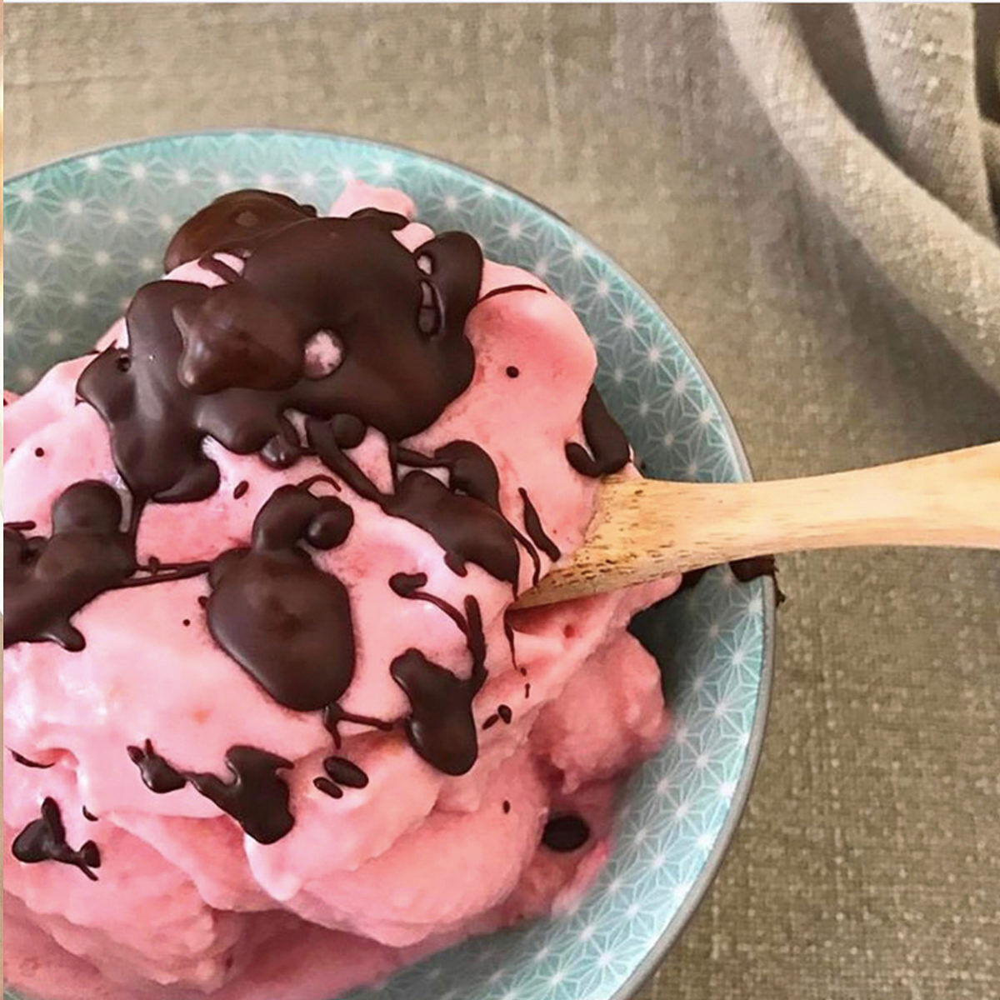
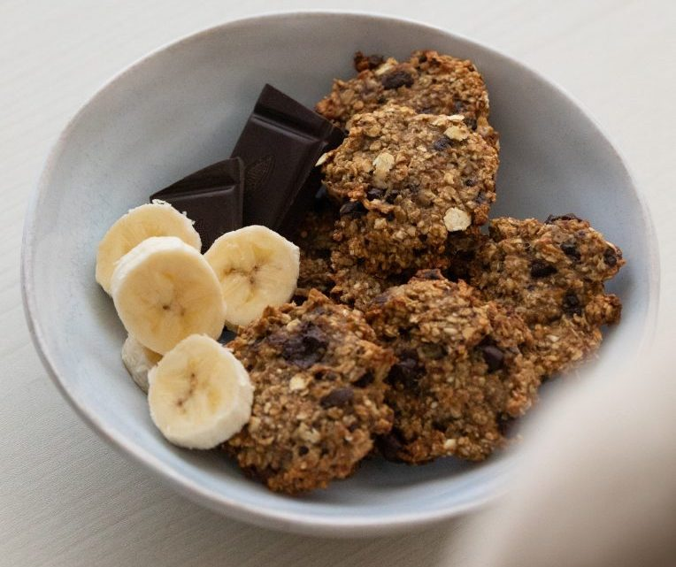

Tarta de Frutas
Ingredientes:
- 2 tazas harina integral
- 1 cucharada sopera polvo para hornear
- 8 sobres estevia
- 1/4 taza aceite
- 3/4 taza agua hirviendo
Relleno
- 3 manzanas medianas
- 1 cucharadita Canela
- 4 sobres estevia
- 1/2 taza leche
- 3 yemas de huevos
- 1 cucharada harina integral
Paso a paso:
- Para la masa mezclar los ingredientes secos primero, luego agregar los húmedos y unir todo logrando que quede un bollo de masa homogéneo y liso.
- Llevar el bollo a la heladera durante 30 min
- Para el relleno cortar 2 manzanas peladas en cubitos, ponerlas en una cacerola, agregar la estevia y cocinar, cuando estén cocidas mixar para lograr un puré.
- Al puré agregar la leche, las yemas, la harina integral y la canela. Continuar cociendo a fuego lento y mezclando durante 10 min. (Yo le agregué al puré semillas de cardamomo, lino, chía y sésamo, solo por gusto pero no es necesario)
- En un molde para tarta poner la masa y pinchar para que se mantenga plana. Llevar a horno precalentado a 180° por 30 minutos o hasta que esté cocida.
- Untar el relleno en la tarta, la 3er manzana cortarla en rebanadas y usarla para decorar. (Yo a la decoración le agregué arándanos y almendras)
- Llevar al horno a la misma temperatura por 20 minutos más o hasta que las manzanas de arriba se vean doradas.
- Dejar enfriar, desmoldar y servir. A disfrutar!!
Yogur Helado Casero

Ingredientes:
- Yogur natural
- Frutas variadas (fresas, arándanos, mango, etc.)
- Edulcorante al gusto
- Opciones sin lactosa: yogur sin lactosa o alternativas vegetales
Paso a paso:
- Mezcla el yogur con el edulcorante.
- Pela y corta las frutas en trozos pequeños.
- Incorpora las frutas a la mezcla de yogur.
- Vierte la mezcla en moldes para paletas o en un recipiente y congélalo.
- Deja que el yogur helado se congele por varias horas o durante la noche.
- Saca del congelador y sirve como opción saludable de helado casero.
Galletas de Avena y Platanos

Ingredientes:
- 2 plátanos maduros
- 1 taza de avena
- 1/2 taza de pasas o chispas de chocolate (opcional)
- Esencia de vainilla (opcional)
- Nueces picadas (opcional)
Paso a paso:
- Precalienta el horno a 180°C.
- Tritura los plátanos en un tazón.
- Agrega la avena a los plátanos triturados y mezcla bien.
- Añade las pasas, chispas de chocolate, esencia de vainilla o nueces si lo deseas.
- Forma pequeñas galletas y colócalas en una bandeja para hornear.
- Hornea durante 15-20 minutos o hasta que estén doradas.
- Deja enfriar y disfruta de unas deliciosas galletas saludables.
Smoothie Bowl Energizante
Ingredientes:
- 1 plátano congelado
- 1 taza de bayas mixtas congeladas
- 1/2 taza de yogur natural
- 1/4 taza de leche (puedes usar leche vegetal)
- Toppings: granola, rodajas de plátano, frutas frescas, semillas de chía
Paso a paso:
- Coloca el plátano congelado, las bayas, el yogur y la leche en una licuadora.
- Mezcla hasta obtener una consistencia suave y cremosa.
- Vierte el smoothie en un tazón.
- Decora con granola, rodajas de plátano, frutas frescas y semillas de chía.
- Sirve inmediatamente y disfruta de un desayuno saludable y energizante.
Pudín de Chía con Frutas
Ingredientes:
- 1/4 taza de semillas de chía
- 1 taza de leche (puedes usar leche vegetal)
- Edulcorante al gusto
- Frutas frescas para decorar
Paso a paso:
- Mezcla las semillas de chía, la leche y el edulcorante en un tazón.
- Revuelve bien y refrigera durante al menos 2 horas o toda la noche.
- Revuelve la mezcla nuevamente antes de servir para asegurar una textura uniforme.
- Sirve en tazones individuales y decora con frutas frescas.